Scalability of parameterizations in global high-resolution ocean models
Marshall Ward
National Computational Infrastructure

NCI Optimization Project

- ACCESS profiling:
- UM
- MOM
- CICE
- ROMS
- WAVEWATCH
- Expansion to new fields
- Lattice QCD
- Magnetotellurgy
- Bioinformatics
- Tools and methodologies
Recent MOM usage at NCI
| Model | Resolution | Grid | CPUs |
|---|---|---|---|
| OFAM | 0.1° - 2° | 1191 x 968 | 384 |
| 0.1° | 3600 x 1500 | 512 | |
| ACCESS-CM | 1° | 360 x 300 | 40 |
| 0.25° | 1440 x 1080 | 960 | |
| ARCCSS (GFDL) | 0.25° | 1440 x 1080 | 960 |
| 0.1° | 3600 x 2700 | 9196 |
Why scale up?

(Hallberg 2013)
0.1° is a minimum for Southern Ocean dynamics
How to scale up?
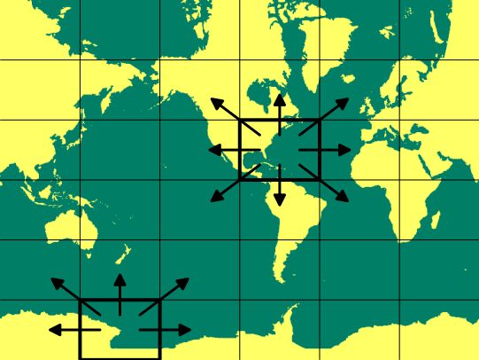Parallelisation by domain decomposition
Message passing model

Model configurations
- 0.25° resolution
- 1440 x 1080 grid
- 50 levels
- 30-minute timestep
- 10 day integration
- SIS: Sea Ice Simulator

0.25° main loop scaling
0.25° submodel scaling
Coupled SIS scalability
Recommended MOM-to-SIS CPU ratio is 6:1
Concurrent scaling

0.25° main loop scaling
0.25° simulation times
| CPUs | Runtime (s) | CPU Hrs | yr/day |
|---|---|---|---|
| 960s | 7364.9 | 1966.1 | 11.7 |
| 1920s | 3986.8 | 2126.3 | 21.7 |
| 2240c | 3347.5 | 2112.4 | 25.8 |
| 3840s | 2504.3 | 2776.5 | 34.5 |
| 4480c | 1919.6 | 2510.0 | 45.0 |
| 8960c | 1500.9 | 3964.8 | 57.6 |
0.25° Ocean submodel scaling
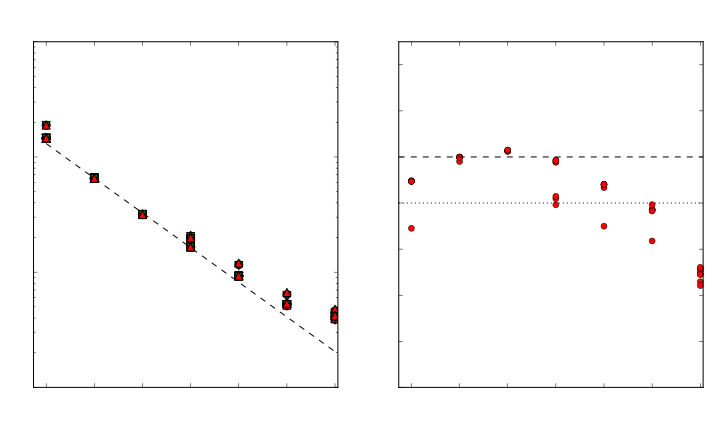0.25° Ocean subroutines
0.25° Ocean subroutines (unblocked)
Subroutine 0.25° scaling
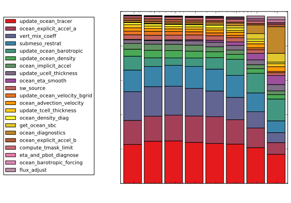Subroutine 0.25° scaling (unblocked)
Tracer advection
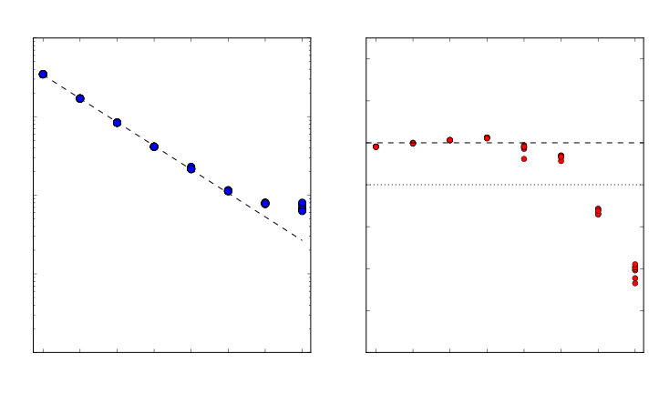Finite volume (MDPPM) calculations
Tracer advection (Unblocked)
Acceleration
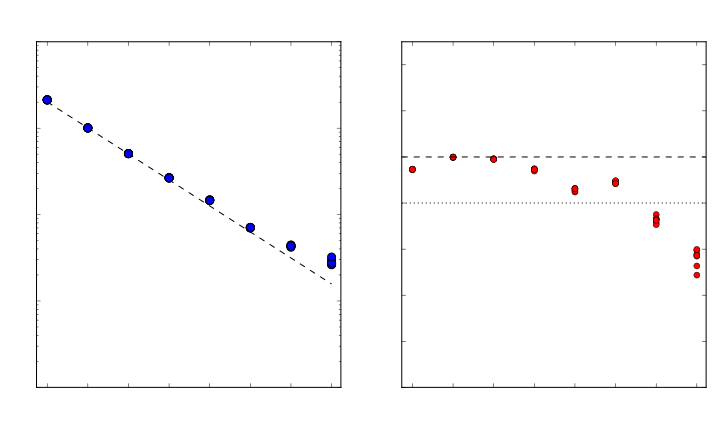Mostly biharmonic Smagorinsky viscosity
Acceleration (Unblocked)

Vertical mixing
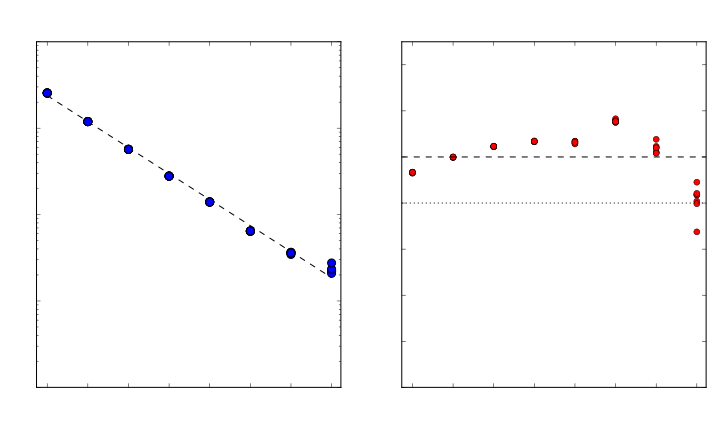KPP and tidal mixing coefficients
Vertical mixing (Unblocked)
Submesoscale restratification
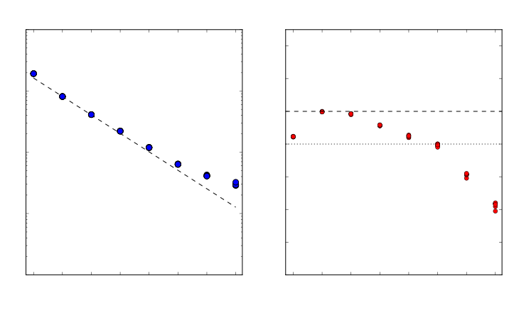Many 2D and irregular 3D loops
Submesoscale restratification (Unblocked)
Barotropic solver
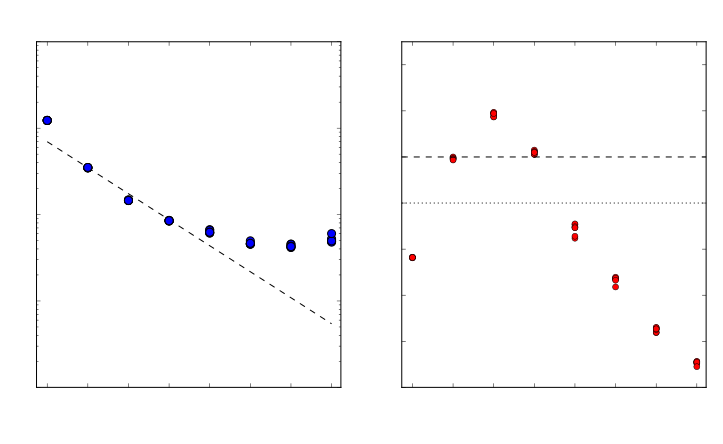80 substeps and 42 halo updates per ocean step
Barotropic solver (Unblocked)
Free surface smoothing
2D biharmonic operations and collectives
Free surface smoothing
Surface boundary fluxes
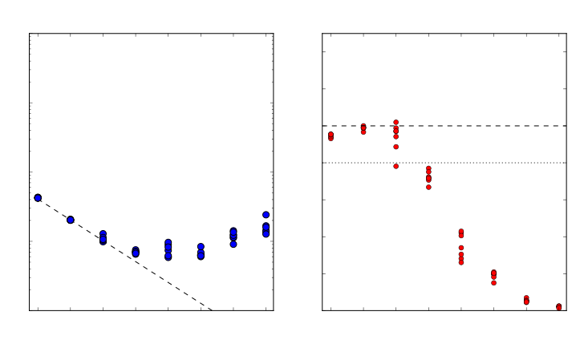2D collectives and halo updates
Surface boundary fluxes (Unblocked)
Ocean diagnostics
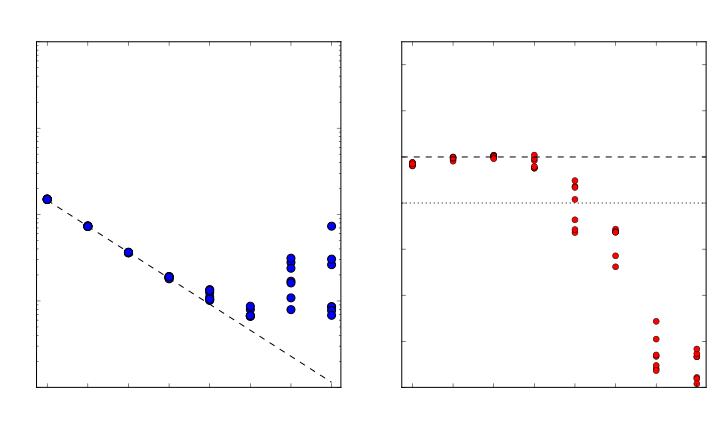48 2D collectives per output (once/day)
Ocean diagnostics
Calculation of $\eta, p_\text{bot}$
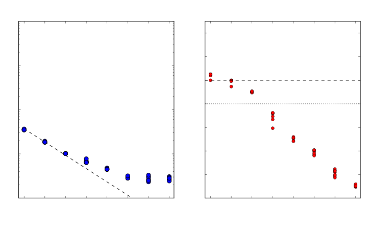Many 2D vector loops
Calculation of $\eta, p_\text{bot}$ (Unblocked)

Flux adjustment
2D interpolation
Flux adjustment

The good and the bad
3D, strong scaling
- Tracer advection
- Acceleration and forces
- KPP/Tidal mixing
- Submesoscale (..?)
2D, poor scaling
- Barotropic dynamics
- Free surface smoothing
- Boundary conditions
- 2D diagnostics
- 2D interpolation
Summary
- Poor scalability in quasi-2D sea ice
- Concurrent ocean-ice runs yield greater performance
- 3D components scale well
- 2D components scale poorly
Time for concurrent 2D / 3D models?
0.1° model scaling